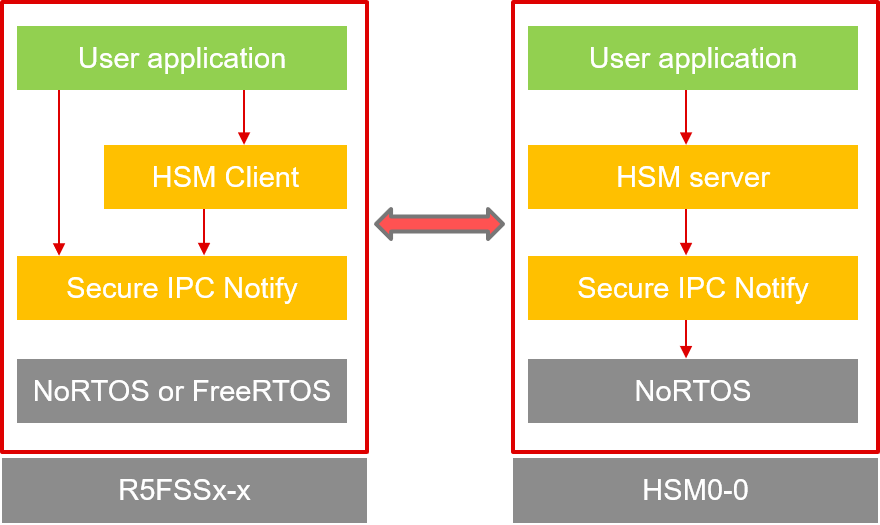
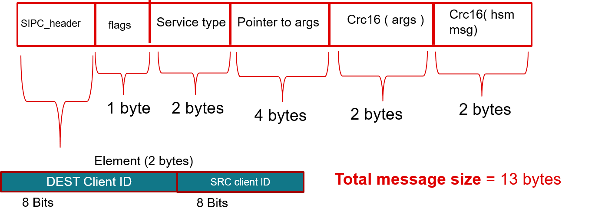

- Note
- Secure IPC Notify driver enables IPC communication between C29 cores and HSM M4 core. This driver cannot be used without TIFS-MCU for HS-SE devices (available on secure resources).
Introduction
- The secure IPC notify(SIPC Notify) driver enables IPC communication between C29 cores and HSM M4 core for HS-SE devices.
- SIPC provides a means of secure communication between C29 CPU and HSM M4 for using HSM services. The underlying implementation uses mailbox HW interrupts and HSM MBOX shared memory(refer Mailbox mechanism for SIPC) to pass messages from C29 CPU to HSM M4 and vice versa.
- The trusted C29 cores which can post a request for services from HSM are termed as secure hosts. A non-secure host cannot communicate with HSM, moreover, the shared memory used in SIPC communication is not accessible to non-secure hosts. The cores that are going to be secure hosts are defined via sysconfig and this will be a static configuration at compile time. At a time there can only be atmost two secure hosts which can talk to HSM via SIPC, thus the name secure IPC.
- Note
- Sysconfig initialization has to be handled by HSM client. For Secure IPC, Sysconfig is not supported in this release. It will be available with upcoming SDK releases along with HSM client
Secure IPC design description
- SIPC supports RTOS-based implementation on the C29 side. The concept of CLIENT IDs is borrowed from DRIVERS_IPC_NOTIFY_PAGE, where in the RTOS scenario each task has a callback registered of type SIPC_FxnCallback. This function will be called when a message is received for a respective CLIENT ID. Refer to IPC_GUIDE to know more about CLIENT IDs.
- HSM client is a wrapper on top of SIPC which asks for specific services from TIFS-MCU. User can install TIFS package from MySecureSw portal.

SIPC communication model (Image to be updated)
- The maximum number of client Ids available on C29 is SIPC_CLIENT_ID_MAX = 2. On the HSM M4 side the SIPC_CLIENT_ID_MAX = 2 as it doesn't run RTOS applications.
Mailbox mechanism for SIPC
- SIPC uses HSM_MBOX (4KB) memory for secure communication with HSM. It uses MBOX_READ_DONE_ACK interrupt to notify target core to read from the dedicated message queue residing in HSM_MBOX memory.
- The swQx is a struct holding pointer to actual queue location in HSM MBOX. There can be atmost 2 secure hosts at a time, so the total number of queues will be 4. If C29 wants to send a message to HSM then C29 writes into C29 -> HSM queue and sends an interrupt to HSM M4, once acknowledged HSM will read the message from the same queue. Similarly, If HSM wants to send a message then HSM will write into HSM --> C29 queues and sends an interrupt to C29.
- Note
- The entire HSM MBOX memory must be read and write protected for non-secure hosts. setting up this firewall configuration is the responsibility of the HSM server running on M4.
SIPC initialization
- Following parameters are user-configurable.
- Queue Depth. -: Number of elements per queue.
- Number of secure hosts -: Could be 1 or 2.
These parameters will be initialized via sysconfig.
- sysconfig will also generate code to allocate memory for the queues in HSM MBOX based on Queue depth and number of secure hosts. The pointer to this queue will be passed to SIPC_init at init time. For the initialization on C29 side, the SIPC_Params::tx_SipcQueues will point to gQueue_SecureHostToHsm where C29 will write to HSM. Similarly, SIPC_Params::rx_SipcQueues will point to gQueueHsmToSecureHost from where C29 will read the message sent by HSM M4.
- As the size of HSM MBOX is 4KB the max Queue Depth is limited.
- if SIPC_NUM_C29_CORES is 2 then the total number of queues will be 4 and the max queue depth will be 492/ SIPC_MSG_SIZE .
- if SIPC_NUM_C29_CORES is 1 then the total number of queues will be 1 and the max queue depth will be 984/ SIPC_MSG_SIZE .
- In order to inherit the HSM services, the application must comply the uses of IPC via shared memory i.e. a memory region should be designated to both the CPUs.
Message format.
The message size of SIPC can be in the range of 3 to 100 bytes.
- The minimum message size is 3 bytes i.e [ Dest ClientId ][ Src ClientId ][data]. Users can change SIPC_MSG_SIZE based on a protocol that is implemented on top of SIPC.
- Following is an example of a message structure used by HSM client to communicate with HSM via SIPC. The size of a message is 13 bytes refer to HSM_CLIENT.

message format used by HSM client
- Note
- It is recommended to use 13 bytes message format as mentioned above for optimal latency.
Example usage.
- Please refer to example part of TIFS-MCU package to see SIPC demonstration.
- Note
- The secure IPC demonstration project is a part of TIFS package for HS-SE devices. To use this example user needs to sign an NDA(non disclosure agreement). TIFS package can installed via mysecure software.
 1.9.1
1.9.1